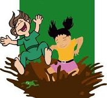

Morten og prinsessen
Morten og prinsessen version 1.0.
Tæt nok på til pjat! track 04.
Musik og tekst er skrevet 2011-02-19 af
Lasse Steen Bohnstedt.
Visse rettigheder forbeholdt. *)
Dreng og pige parallel-leger, men ender sammen i en mudderpøl :)
Bemærk
Obs: Dette er en ufærdig side.
Sangen "Morten og prinsessen" har tidligere ligget på internettet, men røg med i købet, da min hjemmeside blev slettet.
Foreløbig er det den gamle 1.0 version fra februar 2011, som jeg har lagt op.
Sangen "Morten og prinsessen" har tidligere ligget på internettet, men røg med i købet, da min hjemmeside blev slettet.
Foreløbig er det den gamle 1.0 version fra februar 2011, som jeg har lagt op.
Audio
Det eneste audio, der eksisterer på Morten og prinsessen, er en frygtelig MIDI fil.
Det kommer ikke lige op igen.
Jeg vil sandsynligvis bare indspille den med mig på guitar - på et tidspunkt :)
Det kommer ikke lige op igen.
Jeg vil sandsynligvis bare indspille den med mig på guitar - på et tidspunkt :)
Nodeark
Noder til Morten og prinsessen 1.0.
Bemærk at der står den gamle, ikke længere eksisterende web-adresse i PDF'en.
Bemærk at der står den gamle, ikke længere eksisterende web-adresse i PDF'en.
Tekst
|
 |
1)
Prinsessen siger:
- Åh min ædle ridder
Jeg sidder her og lider
Kom og frels mig, hvis du gider
Men bare når du får tid
- For jeg tegner lige en hund, og den er sød
Men åh! Kom og frels mig
før mit fængsel bli'r min død!
Åh-åh-åh-åh...
2)
Men ridderen siger..
Ikke særlig meget
Han er lige ved at lege
Det er vigtigt, han skal sejre
over Manchester United
Han hører egentlig ikke, hvad hun si'r
Men æj! Hvor de ævler hele tiden
så'n no'en pi'r!
Bla-bla-bla-bla...
3)
Sheriffen siger:
- Hands up! Din snyder
Du rø'r ikk' ved din skyder!
Det nytter ikk' du lyver
for jeg så dig fra min flyver
- Du røved' banken med et hagl-gevær
Du tog vores penge,
kan du lige aflevere!
Bang-bang-bang-bang...
4)
Men skurken siger:
- Tag så lige og stop!
Jeg skal lige til at hoppe
fra det træ som jeg skal op i
Tag og kom herop
- Lad vær' og peg på mig med den der pind!
Jeg gider ikke skydes,
jeg vil hel're vær' din ven
Hop-hop-hop-hop...
5)
Så Morten siger:
- Skal vi lege med mudder
Jeg så en skovl herude
Tag min pind til og rode
Jeg tror vi finder noget
- Jeg synes jeg så en skat i vores skov
Den er lige her nedenunder,
vi skal bare grave!
Grave-grave-grave...
Lalalalala!
Inspiration
...
Historik
...
2012-06-06
"Morten og prinsessen" version 1.0